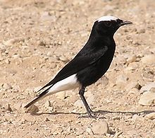
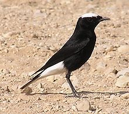

| White-crowned Wheatear | |
|---|---|
|  | |
| Conservation status | |
| Binomial name | |
| Oenanthe leucopyga (Brehm, 1855) |
| White-crowned Wheatear | |
|---|---|
|  | |
| Conservation status | |
| Binomial name | |
| Oenanthe leucopyga (Brehm, 1855) |
The White-crowned Wheatear, or White-crowned Black Wheatear, Oenanthe leucopyga, is a wheatear, a small passerine bird that was formerly classed as a member of the Thrush family Turdidae, but is now more generally considered to be an Old World flycatcher, Muscicapidae.
This large 17–18 cm long wheatear breeds in stony deserts from the Sahara and Arabia across to Iraq. It is largely resident but as occurred as a rare vagrant to western Europe as far away as Great Britain. It nests in crevices in rocks or walls laying 3-5 eggs.
Although most wheatear species have distinctive male and female plumages, adults of both sexes of this species are black except for a white rump and mainly white tail. Full adults have a white crown, not shown by young birds.
The similar Black Wheatear, Oenanthe leucura, also breeds in the western part of the White-crowned Wheatear's range, but the latter has a black inverted T on its white tail, whereas White-crowned has only a black centre to its tail. The Black Wheatear never has a white crown.
This species mainly eats insects. This wheatear has a loud song, more varied than most of its relatives and often including mimicry.

{kind=link}
{kind=link}